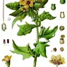

Plant Grimoire
 Belladonna
Belladonna
Belladonna (Atropa belladonna) is an extremely poisonous plant with dark purple berries and bell-shaped flowers.
History
Belladonna's recorded history spans witchcraft, warfare, and medicine. It appears in medieval records as an ingredient in flying ointments associated with witches. In military history, the Scottish army used its toxic juice to intoxicate and incapacitate the Norwegian forces of King Svein Knutsson during his attempted conquest of Scotland under King Duncan I. Centuries later, atropine, an alkaloid derived from belladonna, served the Allied forces in World War II as the primary known antidote to nerve agents used by Germany. The plant is sacred to the Fates, particularly Atropos, who severs the thread of life. In folk belief, belladonna was thought to manifest as a beautiful but lethal woman.
Characteristics
Belladonna is a perennial with a rigid central stalk that branches outward, capable of reaching up to three feet in height. Its bell-shaped flowers are purplish-brown. The berries are black, roughly the size of cherries, filled with seeds and a dark, ink-like juice. The plant tolerates partial shade and grows well in chalky soil.
Magickal Properties
- Deities: Hecate, Bellona, Circe
- Powers: Astral Projection, Visions (Historical Use Only)
Folk Names
Banewort, Black Cherry, Deadly Nightshade, Death's Herb, Devil's Cherries, Divale, Dwale, Dwaleberry, Dwayberry, Fair Lady, Great Morel, Naughty Man's Cherries, Sorcerer's Berry, Witch's Berry
Ritual Uses
The priests of Bellona, according to ancient tradition, drank an infusion of belladonna prior to worshipping Her and invoking Her aid. Bellona is the Roman Goddess of war.
Magickal Uses
⚠️ DANGER - DO NOT USE: Today belladonna is little-used in herb magick due to its high toxicity. All parts of the plant are extremely poisonous and there are still reports of death resulting from accidental ingestion of nightshade.
In the past it was used to encourage astral projection and to produce visions, but safer alternatives are available today and belladonna is best avoided entirely.
This plant should never be handled, consumed, or used in any magickal practice.
⚠️ POISON WARNING: Deadly to humans and animals. All parts of the plant are extremely toxic.
Mercy in the Burning Times
In ancient times, belladonna was sometimes used to deaden the pain of hard childbirth. During the Burning Times, a small amount was secretly slipped to the condemned on their way to the pyre or scaffold. Quickly swallowed, the herb helped the accused drift into the Otherworld in a drowsing state, easing an otherwise unimaginably cruel death.
Etymology: The Beautiful Lady
Atropa belladonna has many names: banewort, deadly nightshade, devil's cherry, dwale, but most popularly belladonna, which means "beautiful lady," a surprisingly innocuous, even seductive name for such a deadly plant. The standard explanation for this folk name says that it derives from an extract made from the berry's juice that was used in ladies' eyes during the Renaissance to create a dilated "doe-eyed" expression, which was, at that time, considered very beautiful and seductive. The herbalist John Gerard noted a separate cosmetic claim: that women applied belladonna to impart an unnatural paleness to the cheeks. Contradicting this, others reported the opposite use entirely, with the dark juice of the ripe berries being rubbed into the cheeks to produce a reddish-purple flush. Whether for pallor or color, the plant became so thoroughly linked to seductive beauty, wise women, and witches that its danger was almost a part of its allure.
However, centuries previously, belladonna was sacred to the Roman war deity, Bellona, daughter of Mars. The plant was considered under her dominion and to share her essence. Ancient Roman priests allegedly drank some sort of elixir containing belladonna prior to ritual appeals to Bellona. The word belladonna contains the name Bellona within it, and it may have been a euphemistic pun on her name so that one could refer to her without actually calling upon this beautiful but fearsome Lady. Belladonna, like the goddess Bellona, is a beautiful but lethal killer.
Atropos: The Thread Cutter
Belladonna's genus name Atropa honors Atropos, one of the three Fates, whose name entities "the dreadful," "the merciless," or "the cutter." Atropos is the Fate who cuts or terminates the thread of life.
Related Species
Belladonna is a member of the nightshade family and is frequently equated with Deadly Nightshade. The names may or may not be used to indicate the same species. Various types of nightshade do exist that are also deadly, including Black Nightshade (Solanum nigrum) and Russian Nightshade (Scopolia carniolica), also known as Russian belladonna. The same family counts familiar food crops among its members, including the common potato, a surprising kinship for so lethal a plant.
Chemical Composition and Effects
The primary toxin is the alkaloid atropine, which first stimulates the nervous system, then paralyzes it, causing muscular convulsions. Belladonna may also cause hallucinations, cramps, severe headache, mental stupor and, of course, death. Fly agaric (Amanita muscaria) is the traditional antidote, however, it, too, is potentially fatally poisonous and the antidote must be administered at an incredibly fine, delicate balance and only by a skillful, professional hand.
Habitat and Cultivation
Belladonna is a perennial that grows rampant among ruins and in wastelands. It is still found in this manner in Great Britain. It is rarely found wild in North America but is instead a cultivated plant. As its name implies, it has lovely flowers and so is often a prized component of poison gardens, where it may be appreciated visually and from a distance.
Historical Medicinal Use
Belladonna's alkaloids are used to make atropine, an eye medication. Until World War I belladonna was not an uncommon medicinal plant. Trained herbalists and pharmacists knew correct methods of use. The main pharmaceutical crop was derived from wild belladonna growing on stone ruins in the wilder regions of the old Austro-Hungarian Empire. It was used to treat asthma, sciatica, and various other disorders.
Wise-Women's Herbalism
As a beautiful and dangerous plant, belladonna was beloved and prized by herbalist wise-women who marked their skill by their proficiency with such plants.
The Witch's Flying Ointment
Belladonna is among the most frequently cited ingredients in the legendary witch's flying ointment, a topical preparation described in sources from the 1500s and 1600s, said to produce sensations of flight, transformation, and trance. Some traditions held that witches could transform themselves into winged creatures such as owls, and the ointment was central to that lore. Belladonna's alkaloids, particularly atropine and scopolamine, are known to cause vivid hallucinations and a sense of weightlessness when absorbed through the skin at near-toxic doses, lending the legend a pharmacological foundation.
Other plants frequently named alongside belladonna in flying ointment formulas include hemlock, mandrake, henbane, monkshood, poppy, and thorn apple, a roster that reads almost like a compendium of the most dangerous plants in the European witch's garden.
Peak Power: Walpurgis Night
According to ancient witchcraft traditions, belladonna is at the peak of its power on May Eve (Walpurgis Night), so European witches only picked it on that night, when it is at its most powerful and magickal.
Folk Medicine
Ingestion of deadly nightshade can cause hallucinations, confusion, irregular and rapid heartbeat, seizures, and death. Atropa belladonna nevertheless yields two tropane alkaloids used in modern medicine, atropine and scopolamine. Atropine is used to increase heart rate and, ironically, to treat poisoning. Scopolamine treats nausea and vomiting after surgery. Both alkaloids are used to reduce saliva during surgery. Atropine is also used in eyedrops to dilate the pupils and to treat muscle spasms.
From Buona Donna to Bella Donna
In medieval Italy, the buona donna, the good woman, was the village go-to for potions, ointments, healing, and spells. A witch by every measure, she often lived in the woods and held deep knowledge of plant medicine, ready to heal, to hex, and to help in matters of the heart. Deadly nightshade was in her arsenal, and buona donna was the original folk name for the plant. The name evolved into bella donna, beautiful woman, through the 1600s and 1700s, when Italian women used the herb as a beauty aid. It reddened the skin and produced an attractive blush, and it served as a mydriatic, dilating the pupils into the wide, striking gaze considered beautiful at the time. Today atropine, derived from Atropa belladonna, is still used to dilate the pupils for eye exams.
Attended by the Devil
For all its association with healing, witchcraft, and beauty, deadly nightshade is also feared as a plant attended by The Devil himself. Its bell-shaped flowers, its dark berries, and its lethal touch have always carried that double face.
The Thread of Atropos
The plant's namesake is Atropos, one of the three Fates of Greek myth. The Fates spin the thread of life and measure the thread of life, and Atropos is the one who cuts it. She decides the exact moment of death. The connection is fitting, because even a small dose of A. belladonna brings death. A handful of berries will do, making it a perilous plant for anyone who does not understand or respect its powers. The same plant that brings death, seizures, and racing heart can also relieve pain when combined with other atropine-bearing herbs such as  Hemlock. The ancient Greeks knew this and used belladonna both as a poison and as an anesthetic, in combination with henbane, lettuce, and poppies, to induce a stupor before surgical procedures.
Hemlock. The ancient Greeks knew this and used belladonna both as a poison and as an anesthetic, in combination with henbane, lettuce, and poppies, to induce a stupor before surgical procedures.
Working with Hekate and the Witching Hour
Deadly nightshade is the plant of necromancy, rituals reaching to the dead, and everlasting beauty. It is associated with Hekate, with witchcraft, with the witching hour, and is also called an aphrodisiac. The herb is said to empower witches in their craft and serves as an offering to Hekate, to Circe, or to any powerful ancestral witch. It is not to be ingested.
Flying Ointment Formulas
⚠️ HISTORICAL REFERENCE ONLY. These formulas contain deadly poisons. Do not attempt to prepare or apply them.
Deadly nightshade is one of the most often named ingredients in the witch's flying ointment. The plants were soaked in fat and applied as an external salve. The preparation did not kill, but it produced hallucinations and the sensation of flight, or more accurately, a lucid state of astral projection under ritual conditions. Moderate doses were thought to induce delirium without crossing into lethal range, and the ointments were said to be most effective when worked into broken skin, which in the rough conditions of medieval life was rarely far to find. Three historical formulas appear in old records:
- Parsley, water of aconite, poplar leaves, and soot.
- Water parsnip, sweet flag, cinquefoil, bat's blood, deadly nightshade, and oil.
- Aconite, cinquefoil, deadly nightshade, and soot, sometimes accompanied by other animal fats added in later retellings to fuel the demonization of witches.
Witches were said to anoint their skin with the ointment, or to slather it onto a broomstick which they then rode, so that the toxic alkaloids would absorb through the mucous membrane.
The Stupor of Control
The herb induces madness and also a spell-like slumber in which the poisoner can take hold of the psyche of the victim. This served the long misinformation campaign against witches that began in the 1500s and has never quite ended, reinforcing the idea that witches were always up to something dangerous. The same logic surfaced again in the 1950s, when atropine was used as a psychiatric treatment that essentially induced a temporary coma so that the doctor could administer certain cures.
Belladonna and the Valkyries
The Valkyries were the fierce winged maidens who swept across the battlefield and chose who would be carried to's hall, Valhalla, on death. The other half went to Freyja's meadow, Fólkvangr. Belladonna flowers are associated with the Valkyries, perhaps for the plant's psychotropic gift of flight, perhaps because the Norse understood the power and death held within the plant, as fierce as the Valkyries themselves.
Circe's Cup
In Greek legend Circe was a powerful sorceress, daughter of the sun god Helios and the ocean nymph Perse. She mastered incantations, spells, and the use of plants and poisons to work change, and her domain included the wicked poisons, nightshade, mandrake, and henbane among them. When the wrong-way sailors of Odysseus blundered onto her peaceful island, Circe, who preferred the company of wolves and lions and the forest, was not thrilled. After the crew killed and feasted on a magnificent stag, they descended on her home, and she opened her door, laying out a feast of cheese, honey, barley meal, and a strong, dark Pramnian wine, all of it laced with baneful herbs, deadly nightshade among them. When the crew was sufficiently intoxicated she turned them into swine and shut them away in her pens. That they did not die at all is a sign of how exactly she understood the powers of the plants.
Eurylochus, who had hung back at the door, went back to the ship and told Odysseus what had happened. On his way to Circe's, Odysseus met Hermes, who gave him a potent herb to ward off Circe's baneful drugs and her bewitchery. Odysseus entered the house and resisted her enchantments, slept with her, and made her promise to do no further mischief and to restore his men to human form, which she did. He stayed with her a full year and they had three sons together. He returned to the island at least once after leaving.
Moly
The herb Hermes gave Odysseus was called Moly, and it was described as having a root of black and a flower as white as milk. Some hold it to be Allium nigrum, black garlic, or another close relative in the allium family. There is a modern plant called Allium moly, the Lily leek, but its flowers are yellow. Allium is the family of  Garlic and onion, both long-known protective herbs, and garlic in particular has a long-standing reputation for warding off evil enchantments.
Garlic and onion, both long-known protective herbs, and garlic in particular has a long-standing reputation for warding off evil enchantments.
Agrippina and Claudius
In ancient Rome, Agrippina the Younger was suspected of killing her husband, Emperor Claudius, with one or more of the tropane alkaloids in deadly nightshade, though some hold that she simply served him a dish of poisoned mushrooms.
Meaning When Gifted
When belladonna is gifted it is regarded as a fatal gift to a man.
USDA Hardiness Zone for Atropa belladonna sourced from the Missouri Botanical Garden Plant Finder and the Royal Horticultural Society.